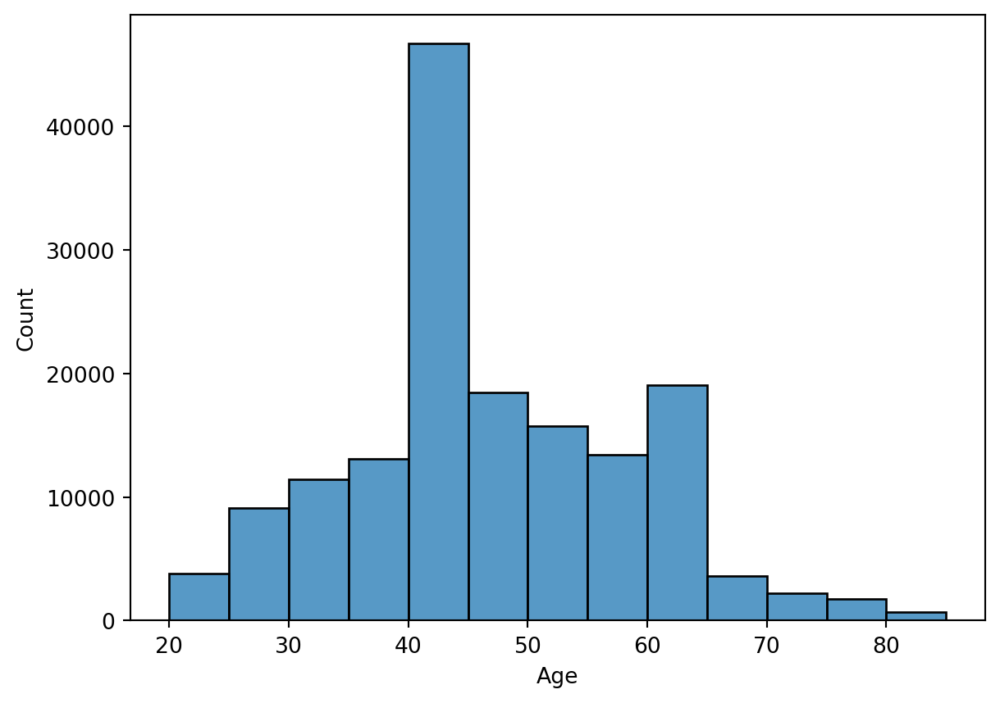
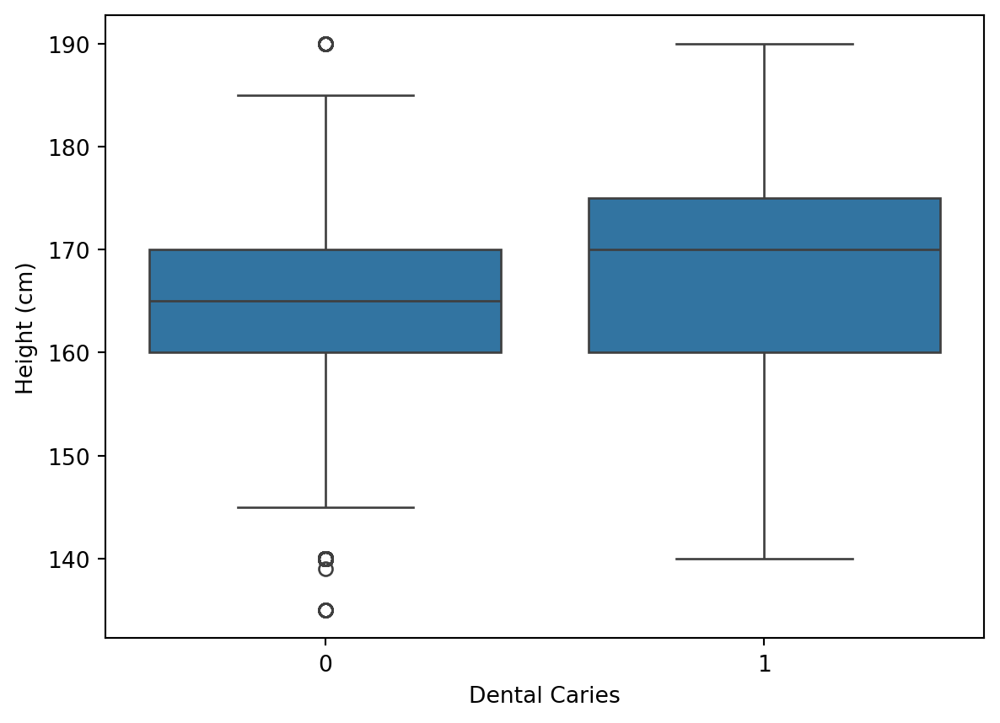
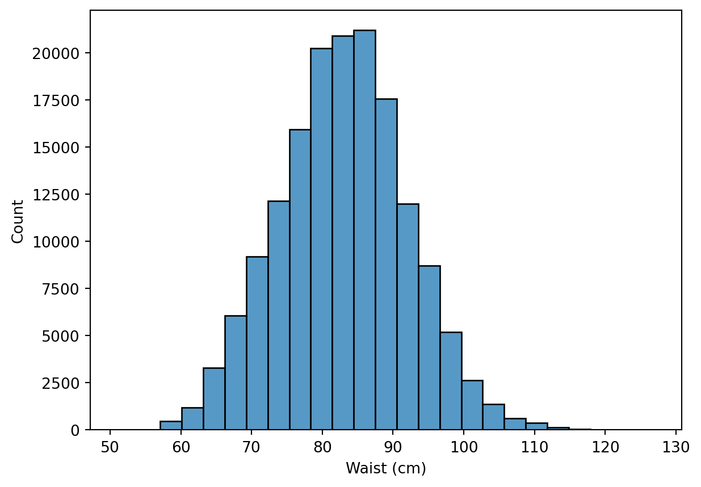
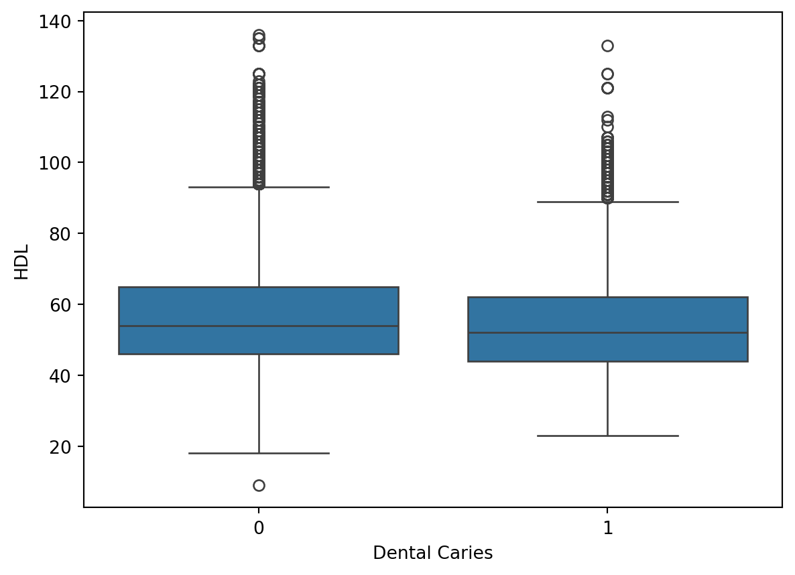
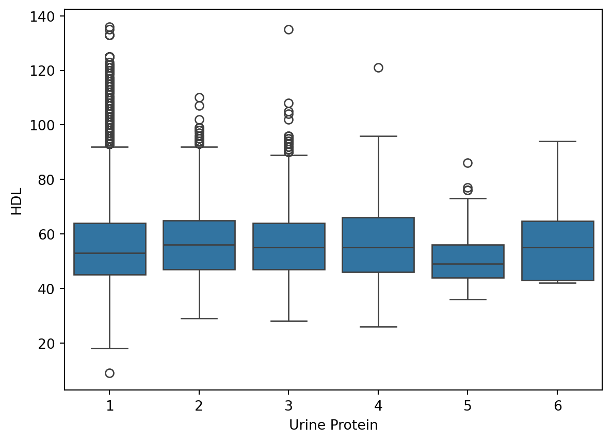
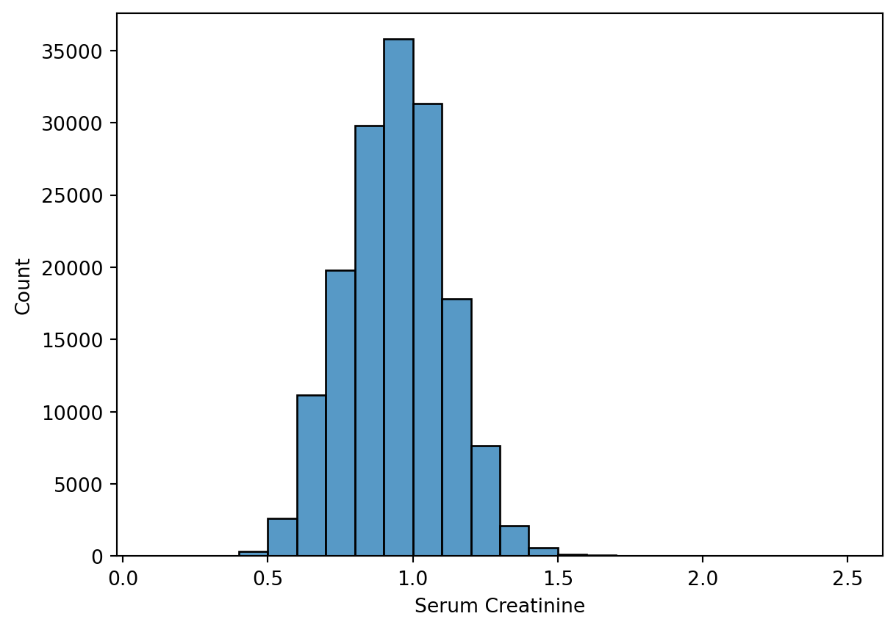
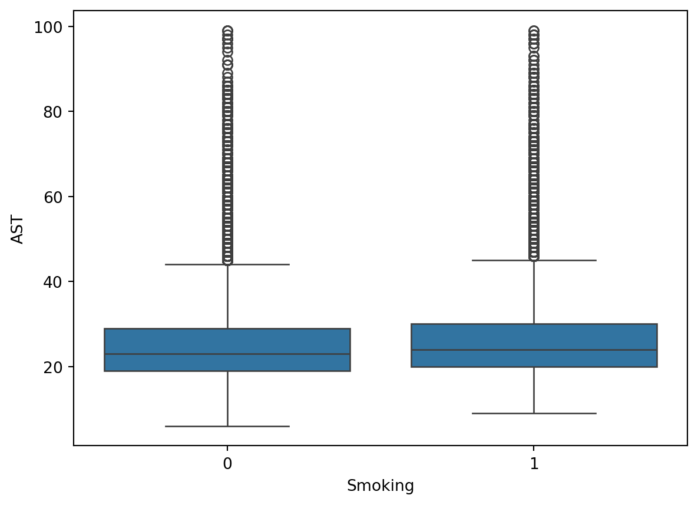

import numpy as np
import pandas as pd
import seaborn as sns
import matplotlib.pyplot as plt
from sklearn.preprocessing import OneHotEncoder, MinMaxScaler, StandardScaler
from sklearn.linear_model import LogisticRegression, LogisticRegressionCV,SGDClassifier
from sklearn.kernel_approximation import RBFSampler
from sklearn.ensemble import RandomForestClassifier
from sklearn.svm import SVC
from sklearn.model_selection import train_test_split, cross_validate, RandomizedSearchCV
from sklearn.compose import ColumnTransformerSmoker predictions
Intro
This semestral work is focused on prediction of whether a person is a smoker or not, based on biological data such as height, weight, blood pressure, etc.
This work is tied to Kaggle competition with the name of Binary Prediction of Smoker Status using Bio-Signals.
Reading and preprocessing data
Those are all of the libraries and functions used for this project.
pd.set_option("display.precision", 2)
data = pd.read_csv('Smokers/train.csv', index_col=0)| age | height(cm) | weight(kg) | waist(cm) | eyesight(left) | eyesight(right) | hearing(left) | hearing(right) | systolic | relaxation | ... | HDL | LDL | hemoglobin | Urine protein | serum creatinine | AST | ALT | Gtp | dental caries | smoking | |
|---|---|---|---|---|---|---|---|---|---|---|---|---|---|---|---|---|---|---|---|---|---|
| id | |||||||||||||||||||||
| 0 | 55 | 165 | 60 | 81.0 | 0.5 | 0.6 | 1 | 1 | 135 | 87 | ... | 40 | 75 | 16.5 | 1 | 1.0 | 22 | 25 | 27 | 0 | 1 |
| 1 | 70 | 165 | 65 | 89.0 | 0.6 | 0.7 | 2 | 2 | 146 | 83 | ... | 57 | 126 | 16.2 | 1 | 1.1 | 27 | 23 | 37 | 1 | 0 |
| 2 | 20 | 170 | 75 | 81.0 | 0.4 | 0.5 | 1 | 1 | 118 | 75 | ... | 45 | 93 | 17.4 | 1 | 0.8 | 27 | 31 | 53 | 0 | 1 |
| 3 | 35 | 180 | 95 | 105.0 | 1.5 | 1.2 | 1 | 1 | 131 | 88 | ... | 38 | 102 | 15.9 | 1 | 1.0 | 20 | 27 | 30 | 1 | 0 |
| 4 | 30 | 165 | 60 | 80.5 | 1.5 | 1.0 | 1 | 1 | 121 | 76 | ... | 44 | 93 | 15.4 | 1 | 0.8 | 19 | 13 | 17 | 0 | 1 |
5 rows × 23 columns
| age | height(cm) | weight(kg) | waist(cm) | eyesight(left) | eyesight(right) | hearing(left) | hearing(right) | systolic | relaxation | ... | HDL | LDL | hemoglobin | Urine protein | serum creatinine | AST | ALT | Gtp | dental caries | smoking | |
|---|---|---|---|---|---|---|---|---|---|---|---|---|---|---|---|---|---|---|---|---|---|
| count | 159256.00 | 159256.00 | 159256.00 | 159256.00 | 159256.00 | 159256.00 | 159256.00 | 159256.00 | 159256.00 | 159256.00 | ... | 159256.00 | 159256.00 | 159256.00 | 159256.00 | 159256.00 | 159256.00 | 159256.00 | 159256.00 | 159256.0 | 159256.00 |
| mean | 44.31 | 165.27 | 67.14 | 83.00 | 1.01 | 1.00 | 1.02 | 1.02 | 122.50 | 76.87 | ... | 55.85 | 114.61 | 14.80 | 1.07 | 0.89 | 25.52 | 26.55 | 36.22 | 0.2 | 0.44 |
| std | 11.84 | 8.82 | 12.59 | 8.96 | 0.40 | 0.39 | 0.15 | 0.15 | 12.73 | 8.99 | ... | 13.96 | 28.16 | 1.43 | 0.35 | 0.18 | 9.46 | 17.75 | 31.20 | 0.4 | 0.50 |
| min | 20.00 | 135.00 | 30.00 | 51.00 | 0.10 | 0.10 | 1.00 | 1.00 | 77.00 | 44.00 | ... | 9.00 | 1.00 | 4.90 | 1.00 | 0.10 | 6.00 | 1.00 | 2.00 | 0.0 | 0.00 |
| 25% | 40.00 | 160.00 | 60.00 | 77.00 | 0.80 | 0.80 | 1.00 | 1.00 | 114.00 | 70.00 | ... | 45.00 | 95.00 | 13.80 | 1.00 | 0.80 | 20.00 | 16.00 | 18.00 | 0.0 | 0.00 |
| 50% | 40.00 | 165.00 | 65.00 | 83.00 | 1.00 | 1.00 | 1.00 | 1.00 | 121.00 | 78.00 | ... | 54.00 | 114.00 | 15.00 | 1.00 | 0.90 | 24.00 | 22.00 | 27.00 | 0.0 | 0.00 |
| 75% | 55.00 | 170.00 | 75.00 | 89.00 | 1.20 | 1.20 | 1.00 | 1.00 | 130.00 | 82.00 | ... | 64.00 | 133.00 | 15.80 | 1.00 | 1.00 | 29.00 | 32.00 | 44.00 | 0.0 | 1.00 |
| max | 85.00 | 190.00 | 130.00 | 127.00 | 9.90 | 9.90 | 2.00 | 2.00 | 213.00 | 133.00 | ... | 136.00 | 1860.00 | 21.00 | 6.00 | 9.90 | 778.00 | 2914.00 | 999.00 | 1.0 | 1.00 |
8 rows × 23 columns
In the dataset we can notice that hearing is split into hearing left and right, with 1 indicating good hearing, and 2 indicating deafness (presumably).
For the sake of easier plotting and clearer interpretation, I will combine them into one variable and ommit which ear is deaf.
idx = ["Both hearing", "One deaf", "Both deaf"]
hear = data.loc[:, ["hearing(left)", "hearing(right)"]]
hearing = []
for index, row in hear.iterrows():
hearing.append(idx[row.iloc[0] + row.iloc[1] - 2])
data.loc[:, "hearing"] = hearingIn case of other variables I see no need to immidiately edit them.
Data
Dataset contains both numeric and categorical data.
Numeric data are: age, height, waist, eyesight, systolic and relaxed blood pressure, fasting blood sugar, cholesterol, triglyceride, serum creatinine, AST, ALT, Gtp
Categorical data are: urine protein, hearing, dental caries, smoking (target variable)
Heatmap
Let’s take a look at the correlation matrix for all of numeric variables.
There are some correlations, although it they don’t seem to be too strong for the most part.
Here I will dedicate whole section to each variable where I will be plotting them with variables which showed some correlation and with categorical variables (in case of section of numeric variables).
Age
From correlation heatmap we can see that age is negatively correlated with height, weight and eyesight. However, the correlation matrix is only done for numeric values, so let’s take a look on it’s relationship with categorical variables as well.

Weight
From correlation heatmap, weight came out as positively correlated with waist and height. But it is also negatively correlated with HDL, so let’s take a look at that.
Height
In correlation heatmap we can see that is slighty negatively correlated with age and HDL, and positively correlated with weight and hemoglobin.
Let’s take a look at the hemoglobin relationship.


Waist
Waist is highly correlated with weight and because of that, it should have similar relationships with other variables. So let’s just take a look at categorical variables right after looking at the histogram and Waist-Weight scatter plot.


Eyesight [left, right]
For eyesight, there are cases of people being blind in one of their eyes (signaled by value 10 in eyesight) or being completely blind (only one case). We will take a look at histograms with eyesight better than 3 in both eyes
From scatter plots we can see that it is fairly symmetrical, so I will only use eyesight left for all the other plots, since they should look basically the same.

Hearing [left, right]
Hearing is a categorical variable. Since for those we are looking at their relationships with each individual numerical variable in their section in this case we will compare it to other categorical variable and we will look at how much samples fall in each category.
Systolic
Systolic blood pressure doesn’t really show any strong correlation on heatmap except for relaxation, which is most likely diastolic pressure. I will still take a look at it’s relationship with waist, since I would expect it to have some relationship.
Relaxation
Since relaxation is quite similar to systolic pressure, I will only show histogram and plots with categorical variables
Fasting blood sugar
Fasting blood sugar shows weak anti-correlation with HDL, so we can look at that. Otherwise the heatmap doesn’t really show anything of interest.
Boxplot shows very strong outliers, expected fasting blood sugar in adults is between 70 and 100 mg/dL, values between 100 and 125 mg/dL should be an alarm for lifestyle change. Anything above means you are probably diabetic. Values of even 200 mg/dL seems very suspicous to me, so I will be removing them.

tmp = data.loc[data["fasting blood sugar"] < 200]
Cholesterol
Cholesterol shows strong correlation with LDL.

Triglyceride
Triglyceride refers to body fat and shows anti-correlation with HDL and correlations with weight and waist.
Again, we have some outliers present, I will be removing anything above 400 since the number of deleted entries is negligable.
tmp = data.loc[data["triglyceride"] < 400]
HDL
HDL (high-density lipoprotein) shows anti-correlation with weight, waist and triglyceride. All of those, except for waist, have been plotted so I will skip those here.


LDL
LDL (low density lipoprotein) shows anti-correlation with weight and waist and correlation with cholesterol. Cholesterol has already been plotted, but waist and weight haven’t, so let’s do those.
If we take a look at LDL boxplot, we can see that it has some very extreme outliers, so for the sake of plotting, I will filter those out here. And once we get to making predictors, I will also filter those out completely.
tmp = data.loc[data["LDL"] < 500]


Hemoglobin
Hemoglobin shows correlation with weight and waist.
Urine protein
Urine protein is a categorical variable and thus will be plotted with numerical variables in their section. Here I will be plotting it with other categorical variables (except with hearing)
One oddity with urine protein is that normally it is measured in miligrams, but here it is in values between 1 and 6. Also, the values are heavily skewed towards 1, thus I will be likely removing this column altogether.
Serum creatinine
Serum creatinine refers to how well kindeys are filtering the blood. In the heatmap, it shows some correlation with hemoglobin, height and weight.
On boxplot we can see that creatinine also has quite big outliers, according to this website we should be expecting values between 0.5 and 1.2 mg. While I could expect 4 mg as an outlier, 10 seems to be quite overblown. For this I will be filtering out anything above 3 mg.
tmp = data.loc[data["serum creatinine"] < 3]

AST
AST refers to an enzyme whose levels are used as markers of liver health. On the heatmap, it shows correlation with ALT, which is also used for liver diagnoses.
Here we can see that this data set is very.. interesting. According to this website AST levels should be less than 40 U/L. Since size of this dataset is around 160 000 entries I will be aggresively removing everything above 100 U/L.
tmp = data.loc[data["AST"] < 100]

ALT
ALT, as eluded to, is another enzyme that is used for liver diagnoses.
As we can see here on boxplot, the outliers are quite outrageous. Accoring to this website healthy levels should be from 19 to 33 U/L. So once again, I will take aggressive measures and remove everything above 100 U/L.
# I will remove AST as well so I can scatter plot them
tmp = data.loc[data["ALT"] < 100]
tmp = tmp.loc[tmp["AST"] < 100]Gtp
GTP is quite an odd variable, wikipedia tells me that it is building block for synthesis o RNA, but doesn’t really talk about any diagnoses. And google doesn’t really help. It did find GGT measuring on this website which says that healthy levels are between 5 and 40 U/L.
On this boxplot we can see that outliers are again quite big, so once again, I will take aggressive measures and remove everything above 100 U/L.
# I will remove AST as well so I can scatter plot them
tmp = tmp.loc[tmp["Gtp"] < 100]Dental caries
Categorical variable, it has already been plotted with all numeric variables and with urine protein and hearing. So I will only plot it with smoking.

Smoking
Since smoking has been plotted with everything there is, I will just write some of the relationships that I have noticed.
Interesting relationships
- Younger people seemed to smoke more than older people
- People with higher weight are more likely to smoke
- Smokers are also taller on average
- It seems that in smokers levels of triglyceride are higher
- Smokers have lower levels of HDL
- Smokers have higher levels of hemoglobin
- Levels of serum creatinine are in much smaller ranges than in non-smokers
- GTP levels seem to be higher in smokers
- Dental caries are more common in smokers
Conclusions on data
It seems that there are several variables based on which we could try to determine whether somebody is smoking or not.
Dataset has several columns with huge outliers and those will be filtered out. Thankfully, the dataset is large enough so it wouldn’t really make a difference.
Another thing is column “Urine protein” which just doesn’t seem to make any sense. Since it also seems very unhelpful, I will be removing it from the dataset.
Big number of variables have largely differing value ranges and thus the will need to be normalized. For that I will try two approaches:
- Standard score: \(x' = \dfrac{x-\mu}{\sigma}\), this should work since all the variables are resembling normal distribution. I haven’t done any actual statistical testing though
- MinMax scaling: this will rescale variables to be between 0 and 1
Since there aren’t that many strong correlations, I think that PCA won’t be particularly helpful, so I won’t be using it.
Data preparation for categorization
The goal here is to filter out the outliers. Since I will be using one hot encoder I will also need to transform hearing from text values back to numbers. Since it will be separated into three distinct columns the values themselves don’t really matter, but let’s go with the number of hearing ears.
data = data.loc[data["fasting blood sugar"] < 200]
data = data.loc[data["triglyceride"] < 400]
data = data.loc[data["LDL"] < 500]
data = data.loc[data["serum creatinine"] < 3]
data = data.loc[data["AST"] < 100]
data = data.loc[data["ALT"] < 100]
data = data.loc[data["Gtp"] < 100]
# Change hearing back to numbers
# Let's encode it as "Hearing" = 2, "One-deaf" = 1, "Deaf" = 0
data["hearing"] = data["hearing"].map({"Both deaf": 0, "One deaf": 1, "Both hearing": 2})Here I will just separate out numeric and categorical variables. And also take extract the target variable.
l_numeric = ["age", "height(cm)", "weight(kg)", "waist(cm)", "eyesight(left)", "eyesight(right)", "systolic", "relaxation", "fasting blood sugar", "Cholesterol", "triglyceride", "HDL", "LDL", "hemoglobin", "serum creatinine", "AST", "ALT", "Gtp"]
# Removal of Urine protein
l_categorical = ["hearing", "dental caries"]
numeric = data[l_numeric]
categorical = data[l_categorical]
target = data["smoking"]
df = data.drop(columns=["smoking"])Training
Creating transformers for data
With that done, let’s create our preprocessors.
For numerical values I will be using MinMaxScaler for one attempt and StandardScaler for another.
For categorical variables I will use OneHotEncoder, this means that hearing will be split into three distinct columns.
What we will end up with are 2 preprocessors:
- One hot encoder + MinMax scaling
- One hot encoder + Standard scaling
minmax_scaler = MinMaxScaler().set_output(transform="pandas")
standard_scaler = StandardScaler().set_output(transform="pandas")
onehot_encoder = OneHotEncoder(sparse_output=False).set_output(transform="pandas")
# Let's also create preprocessor that will do all of this stuff for us in one fell swoop
minmax_prep = ColumnTransformer(
[
("one-hot-encoder", onehot_encoder, l_categorical),
("minmax_scaler", minmax_scaler, l_numeric)
]
)
standard_prep = ColumnTransformer(
[
("one-hot-encoder", onehot_encoder, l_categorical),
("standard_scaler", standard_scaler, l_numeric)
]
)Let’s get us some training and testing data for each of the column transformer.
Xmm = minmax_prep.fit_transform(df)
Xstd = standard_prep.fit_transform(df)
Xmm_train, Xmm_test, ymm_train, ymm_test = train_test_split(Xmm, target, test_size=0.4)
Xstd_train, Xstd_test, ystd_train, ystd_test = train_test_split(Xstd, target, test_size=0.4)Training Logistic regression
mm_log_reg = LogisticRegressionCV(max_iter=500, cv=5)
mm_log_reg.fit(Xmm_train, ymm_train)
std_log_reg = LogisticRegressionCV(max_iter=500, cv=5)
std_log_reg.fit(Xstd_train, ystd_train)
print(f"Accuracy of MinMax scaling using logistic regression: {mm_log_reg.score(Xmm_test, ymm_test)}")
print(f"Accuracy of standard scaling using logistic regression: {std_log_reg.score(Xstd_test, ystd_test)}")Accuracy of MinMax scaling using logistic regression: 0.7492586706859549
Accuracy of standard scaling using logistic regression: 0.7492914366224873Here we can see that we have about the same accuracy for both minmax and standard scaling, with the score being ~0.749, and standard scaling is performing slightly worse.
Now let’s try to take a look if we can perform slightly better with some other methods
Random forest classifier
For random forest classifier I decided to use RandomizedSearch with cross validation to find optimal parameters.
parameters = {'n_estimators' : np.arange(10,100)}
mm_forest = RandomizedSearchCV(RandomForestClassifier(), parameters)
mm_forest.fit(Xmm_train, ymm_train)
std_forest = RandomizedSearchCV(RandomForestClassifier(), parameters)
std_forest.fit(Xstd_train, ystd_train)
print(f"Accuracy of MinMax scaling using random forest: {mm_forest.best_score_} with estimators {mm_forest.best_estimator_}")
print(f"Accuracy of standard scaling using random forest: {std_forest.best_score_} with estimators {std_forest.best_estimator_}")Accuracy of MinMax scaling using random forest: 0.7715849563816318 with estimators RandomForestClassifier(n_estimators=87)
Accuracy of standard scaling using random forest: 0.7722949091636209 with estimators RandomForestClassifier(n_estimators=99)For random forest classifier we can see that the accuracy has risen compared to logistic regression. MinMax scaling is still performing very slightly better than standard scaling.
SVM
While I have planned to compare several SVM kernels, given the sheer size of my dataset and severe limitations on time I can spend on this, taking into account rendering the document, I will use only RBF kernel, which has performed best in my testing.
mm_svm = SVC(kernel='rbf', gamma='scale')
std_svm = SVC(kernel='rbf', gamma='scale')
mm_svm.fit(Xmm_train, ymm_train)
std_svm.fit(Xstd_train, ystd_train)
print(f"Accuracy of MinMax scaling using SVM: {mm_svm.score(Xmm_test, ymm_test)}")
print(f"Accuracy of standard scaling using SVM: {std_svm.score(Xstd_test, ystd_test)}")Accuracy of MinMax scaling using SVM: 0.7701305722570816
Accuracy of standard scaling using SVM: 0.7725388685922115If we look at results here, standard scaling is finally outperforming minmax and by non-negligable ammount.
SGD Classifier
One thing that apparently performs pretty well on large samples is SGD Classifier, so I would like to test it here.
mm_sgd = SGDClassifier()
std_sgd = SGDClassifier()
mm_sgd.fit(Xmm_train, ymm_train)
std_sgd.fit(Xstd_train, ystd_train)
print(f"Accuracy of MinMax scaling using SGD: {mm_sgd.score(Xmm_test, ymm_test)}")
print(f"Accuracy of standard scaling using SGD: {std_sgd.score(Xstd_test, ystd_test)}")Accuracy of MinMax scaling using SGD: 0.7550418584839201
Accuracy of standard scaling using SGD: 0.7415095266960468By itself SGD doesn’t really perform that well. Let’s try to use kernel approximation with RBF sampler, since it RBF performed so well with SVM
mm_sgd_rbf = SGDClassifier()
std_sgd_rbf = SGDClassifier()
sampler = RBFSampler()
Xmm_rbf = sampler.fit_transform(Xmm)
Xstd_rbf = sampler.fit_transform(Xstd)
Xmm_rbf_train, Xmm_rbf_test, ymm_rbf_train, ymm_rbf_test = train_test_split(Xmm, target, test_size=0.4)
Xstd_rbf_train, Xstd_rbf_test, ystd_rbf_train, ystd_rbf_test = train_test_split(Xstd, target, test_size=0.4)
mm_sgd_rbf.fit(Xmm_rbf_train, ymm_rbf_train)
std_sgd_rbf.fit(Xstd_rbf_train, ystd_rbf_train)
print(f"Accuracy of MinMax scaling using SGD with RBF kernel: {mm_sgd_rbf.score(Xmm_rbf_test, ymm_rbf_test)}")
print(f"Accuracy of standard scaling using SGD with RBF kernel: {std_sgd_rbf.score(Xstd_rbf_test, ystd_rbf_test)}")Accuracy of MinMax scaling using SGD with RBF kernel: 0.7526007962122577
Accuracy of standard scaling using SGD with RBF kernel: 0.7516178181162864There was an attempt, maybe by testing more kernel approximations I could get somewhere, but I will leave that be.
Conclusion
For Logistic regression, minmax scaling had better performance, but by negligable ammount.
For random forest minmax also took the cake, but again, by negligable ammount
When it came to SVM however, standard scaling had better performance than minmax scaling. The difference this time was, however, quite substantial.
Now, let’s compare how each method fared for both minmax and standard
Minmax:
- Random Forest
- SVM
- SGD
- SGD with RBF kernel approximation
- Logistic regression
Standard scaling:
- SVM
- Random Forest
- SGD
- SDG with RBF kernel approximation
- Logistic regression
When comparing random forest for MinMax and SVM for standard scaling, it seems that SVM for standard scaling comes on top, so I will be using that for the actual sumbmission.
Submission of my predictions
Data to classify for the submission is in test.csv file, so let’s get the data in.
test_data = pd.read_csv('Smokers/test.csv', index_col=0)Since submission is in format [id, smoking] let’s check to make sure that the id’s match up
print("Head")
print(test_data.head(), "\n")
print("Tail")
print(test_data.tail(), "\n")Head
age height(cm) weight(kg) waist(cm) eyesight(left) \
id
159256 40 165 70 84.0 1.2
159257 80 160 60 93.0 1.0
159258 60 170 70 86.5 0.6
159259 40 160 50 67.0 0.3
159260 40 170 75 89.4 1.0
eyesight(right) hearing(left) hearing(right) systolic relaxation \
id
159256 1.2 1 1 130 89
159257 1.0 2 2 144 72
159258 0.7 1 1 117 75
159259 0.4 1 1 116 62
159260 0.9 1 1 132 94
... triglyceride HDL LDL hemoglobin Urine protein \
id ...
159256 ... 186 49 115 14.2 1
159257 ... 158 35 104 13.0 1
159258 ... 173 39 88 15.4 1
159259 ... 47 75 128 14.5 1
159260 ... 100 39 123 16.5 1
serum creatinine AST ALT Gtp dental caries
id
159256 0.9 19 25 32 0
159257 1.1 20 12 24 0
159258 1.4 38 60 36 0
159259 0.6 25 18 10 1
159260 1.0 30 39 27 1
[5 rows x 22 columns]
Tail
age height(cm) weight(kg) waist(cm) eyesight(left) \
id
265422 40 165 60 78.0 0.8
265423 40 170 85 95.0 1.2
265424 35 170 85 89.0 1.2
265425 40 160 60 67.0 0.7
265426 50 150 50 80.0 0.9
eyesight(right) hearing(left) hearing(right) systolic relaxation \
id
265422 0.9 1 1 112 78
265423 1.2 1 1 130 90
265424 1.2 1 1 131 86
265425 0.8 1 1 120 80
265426 1.0 1 1 115 67
... triglyceride HDL LDL hemoglobin Urine protein \
id ...
265422 ... 82 59 149 16.4 1
265423 ... 186 44 100 16.0 2
265424 ... 76 53 142 15.9 1
265425 ... 81 55 103 13.9 1
265426 ... 96 48 144 13.0 1
serum creatinine AST ALT Gtp dental caries
id
265422 1.1 24 31 28 0
265423 1.0 25 31 38 0
265424 0.8 33 32 24 1
265425 0.6 42 36 32 0
265426 0.6 18 11 17 1
[5 rows x 22 columns]
Id’s are matching up, so we can proceed to pre-preprocessing.
The only thing I will need to do here is to merge hearing (left) and (right) in the same way I did in the training part. Then Sklearn can take the wheel.
idx = ["Both hearing", "One deaf", "Both deaf"]
hear = test_data.loc[:, ["hearing(left)", "hearing(right)"]]
hearing = []
for index, row in hear.iterrows():
hearing.append(idx[row.iloc[0] + row.iloc[1] - 2])
test_data.loc[:, "hearing"] = hearing
test_data["hearing"] = test_data["hearing"].map({"Both deaf": 0, "One deaf": 1, "Both hearing": 2})So now we just transform our data and feed it to out trained SVM classifier
X = standard_prep.fit_transform(test_data)
prediction = std_svm.predict(X)After getting prediction from the SVM model it’s time to put it into a dataframe and export it as an csv file.
test_data["smoking"] = prediction
output = test_data["smoking"]
print(output.head())id
159256 1
159257 0
159258 0
159259 0
159260 1
Name: smoking, dtype: int64```{python}
output.to_csv('Smokers/my_submission.csv')
```Results
And here we go, those are the results of my work. Public score of 0.78 and private 0.778.